整理筆記
為什麼要 800V：功率／電流瓶頸
機櫃瓦數往上衝時，若還用很低的電壓送（尤其到約 54V），電流一定爆（P＝V×I）。粗算同一 100kW：54V ≈ 1,850A；800V ≈ 125A。
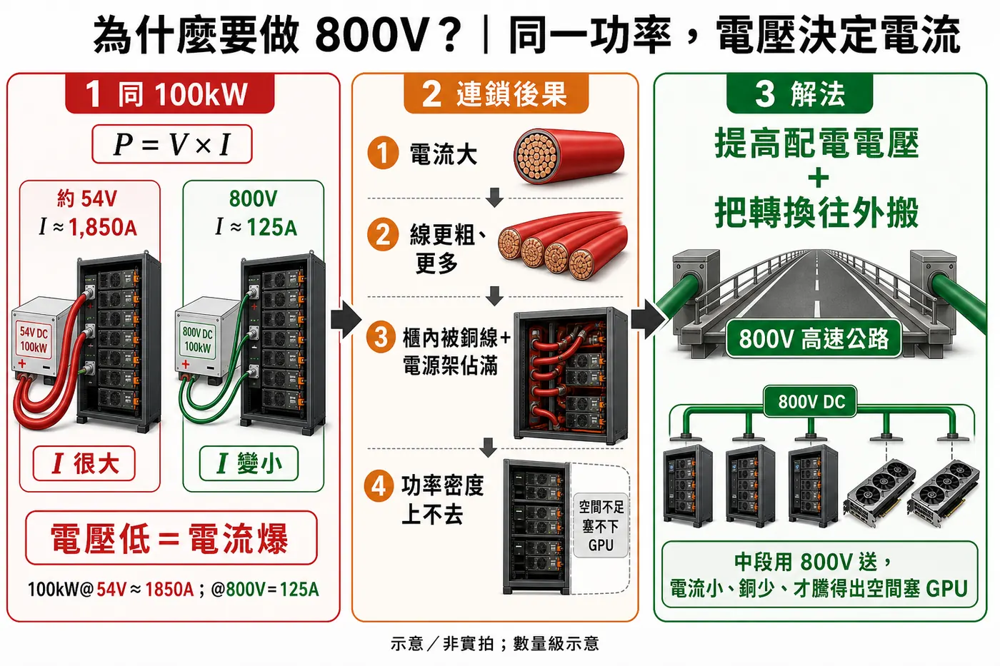
示意／非實拍：左＝同 100kW 的電流差；中＝銅線／電源架佔滿 → 密度上不去；右＝提高配電電壓＋轉換往外搬＝800V 高速公路。
新做法先講一次：A／B／C
解法不是只有一條路。白皮書給三個落點（可並存，不是一定要 A→B→C 升級）：功率變大時，AC→800V 的轉換點往上游搬。
A 機櫃級＝運算櫃旁邊一台 Power Rack（近端，數百 kW）
B 叢集級＝一台 Power Center 餵一整排（MW 級）
C 資料中心級＝Power Block 中壓直轉，整廳走 800V（更長遠）

示意／非實拍：A＝數百 kW（近端）；B＝MW 級叢集；C＝數 MW→往 GW（長遠）。

示意／非實拍：現有＝無 800V；A／B＝415／480V→800V→約 54V；C＝中壓→800V→約 54V。

示意／非實拍：A＝1 對 1；B＝1 對多；C＝1 對整廳。細節後面再拆。
地圖先有了。下面先把現有整條電怎麼走到 GPU與零件認完，後面再細拆 A／B／C。
發電 → GPU：完整路徑（現有）
多數機房現在還在用的路先走一遍（A／B／C 改的是後面幾段）。
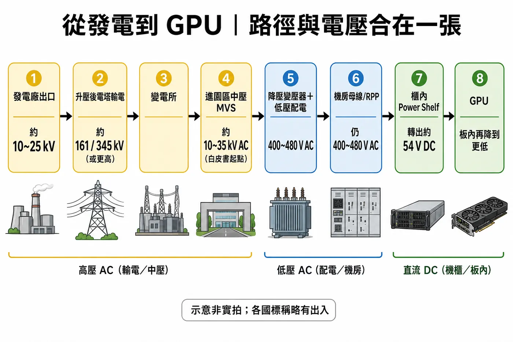
示意／非實拍：各段常見電壓數量級；各國電網標稱會差一點。
1. 發電廠出口 ≈ 10～25 kV
2. 升壓 → 電塔長途輸電 ≈ 161／345 kV（或更高）← 路上高大鐵塔多半在這
3. 變電所降壓
4. 進園區中壓 ≈ 10～35 kV AC（MVS）
5. 電氣室：降壓變壓器＋低壓配電盤 ≈ 400～480 V AC
6. 機房母線／RPP ≈ 仍 400～480 V AC，沿著機櫃列送
7. 櫃內 Power Shelf 才 AC → 約 54 V DC（現有）
8. GPU：板內再降到更低（幾 V～十幾 V）
一句：電塔＝第 2 段；機房故事從第 4 段中壓進園區開始。下面放大第 4～8 步。
園區後面 → GPU（電氣室／機房／進櫃）
重點：現有架構裡，交流一路送到運算櫃內，才在櫃裡轉成約 54V 直流。

示意／非實拍：功能路徑拆解。
電氣室／配電室：中壓開關（MVS）→ 降壓變壓器 → 低壓配電盤（約 400～480V AC）。
機房大廳：母線槽／RPP 把交流沿著列送到各櫃附近；從母線垂下來接到櫃的，常就是 Whip 甩線。
運算機櫃裡面：Power Shelf 做 AC→約 54V DC，再餵同櫃 GPU。
中壓、MVS
中壓＝電塔很高壓與機房 415／480V 低壓之間的檔；進園區常見約 10～35 kV AC（Option C 常用標稱也在這檔）。MVS＝中壓開關櫃：電氣室裡一人高的金屬櫃，負責這段中壓的接通／切斷／保護，後面才降到約 400～480V。
公開實拍（Wikimedia Commons）：中壓開關櫃內部。
降壓變壓器
降壓變壓器＝把中壓（約 10～35 kV）降到機房能用的低壓交流（約 400～480V AC）。電氣室裡常見乾式／澆注型金屬櫃體，不是電塔旁邊那種桿上小罐子。後面才進低壓配電盤。
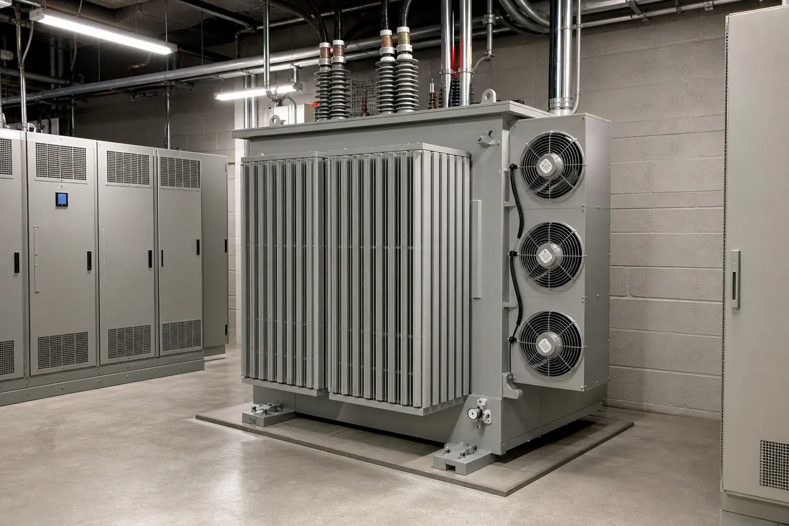
示意／非實拍：電氣室降壓變壓器長相（非現場照；圖偏散熱片／風扇型）。
低壓配電盤
低壓配電盤＝接到變壓器後面、把約 400～480V AC 分路、保護、再送出去的金屬櫃排（斷路器、母排、計量）。人話：電氣室最後一關，後面才進機房母線／RPP。
示意／非實拍：低壓開關／配電盤列（非現場照）。
機房母線長怎樣
現在多數資料中心機櫃列上方走電，長這樣：頭上掛一條金屬軌道母線（Track Busway／母線槽），不是一捆電線。
順序：長軌道 → 插接箱／Tap-off 夾上去 → 垂下的 Whip 進櫃。
電氣室／大電流幹線有時用封閉式 sandwich 母線（方管貼牆），那是另一段；冷通道上餵機櫃，多半是這種軌道。
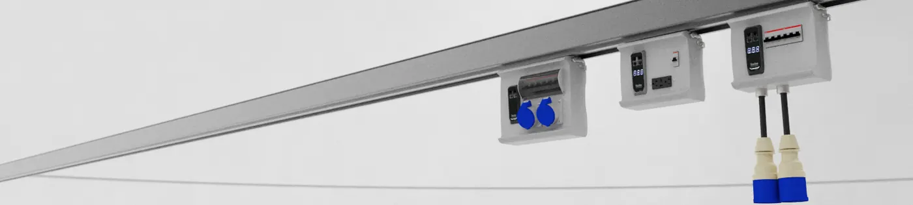
廠商產品圖（Starline Track Busway）｜非機房現場照，但零件長相就是現在機櫃列頭頂常見款：銀軌道＝母線槽；灰盒＝插接箱；右邊垂下黑線＋接頭＝Whip。
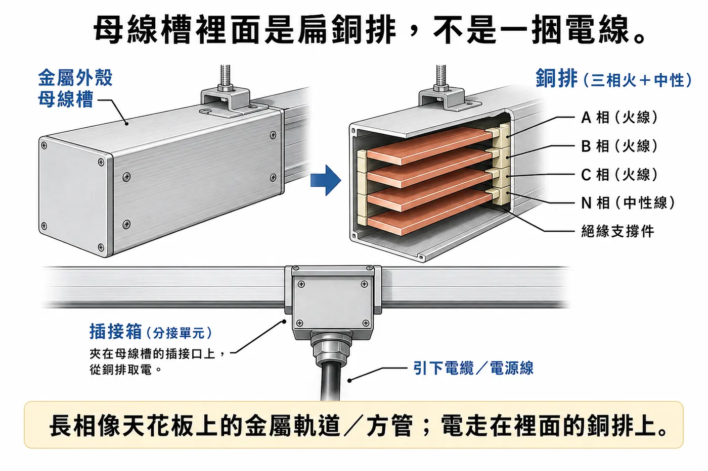
示意／非實拍：外殼方管，裡面扁銅排。
Power Whip（甩線）
接到機櫃上的可插拔供電線束，不是整條母線本體。
• 現有：AC Whip（415／480V）從母線插接箱垂進運算櫃
• Option A 另有：Power Rack → 運算櫃的 800V DC Whip
Power Shelf 與電源模組（怎麼構成）
先搞懂零件語言，下面講 Power Rack 才接得上。分兩層：
Power Shelf（電源架）＝機櫃裡橫插的一層架子（有背板、槽位、匯流）。
模組磚＝插進 Shelf 的可熱插拔窄長金屬磚；轉換在 PSU 裡。這篇主要兩種：PSU、BBU。
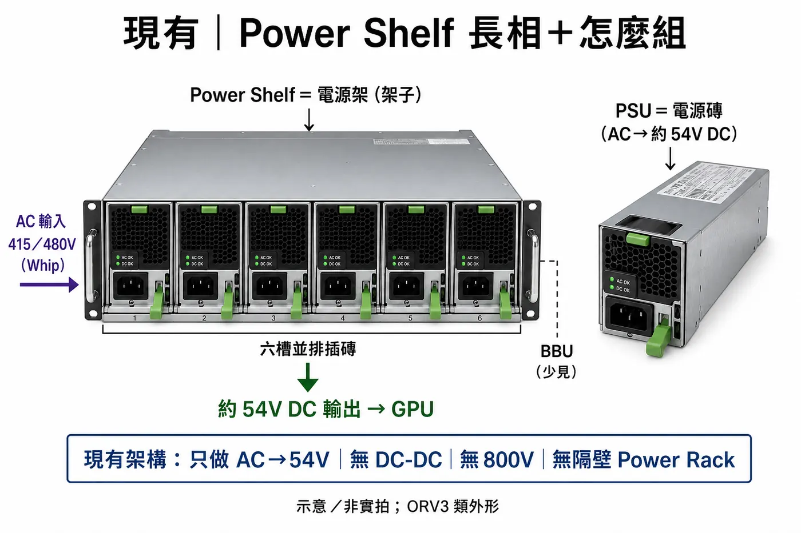
示意／非實拍：架子＝Shelf；磚＝PSU；AC→約 54V；BBU 少見；無 800V／無隔壁 Power Rack。
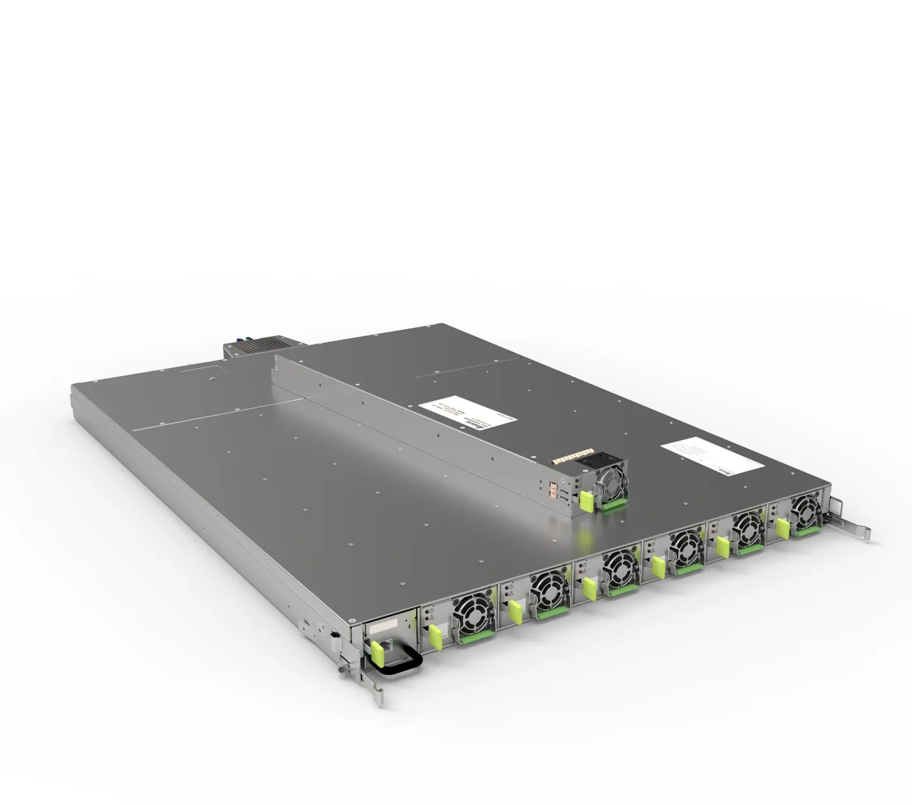
廠商產品圖（台達）：架子＝Shelf；抽出窄長磚＝PSU。
一層 Power Shelf 怎麼構成？ 櫃內留固定高度（例 1U、7U）→ 金屬架＋背板（backplane）匯流 → 前面一排槽位插模組磚 → 電從背板進出到櫃內母線。現有運算櫃常疊多層 Shelf，每層多半插滿 PSU（AC→約 54V）。
PSU（Power Supply Unit，電源供應器）
＝從交流轉成直流的翻譯磚。現有運算櫃：AC 進 → 約 54V DC 出。新解方 Power Rack 裡的 PSU 則改做 AC → 800V DC（外形仍像同一種磚；見方案 A）。
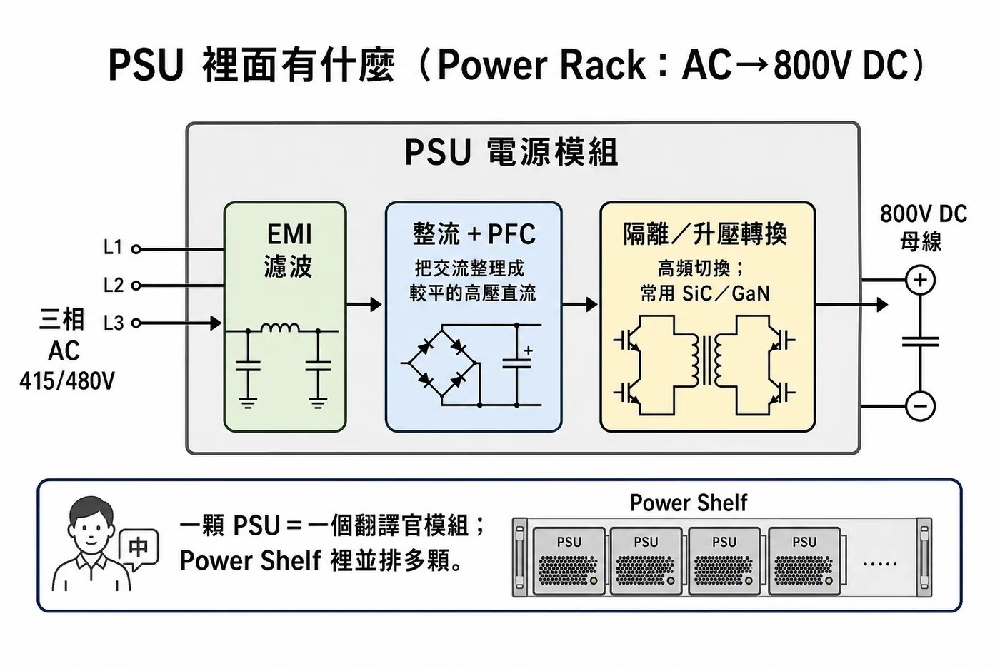
示意／非實拍：這張是 Power Rack 裡做 AC→800V 的 PSU 流程（不是現有運算櫃 AC→約 54V 那顆）。
圖上各段（中英）：AC（交流） → EMI filter（電磁干擾濾波） → 整流 Rectifier ＋ PFC（功率因數修正） → 隔離轉換 Isolated conversion（常上 SiC／GaN）→ 800V DC out。
原本 Compute Rack 怎麼用（拼成整櫃）
認完 PSU，這裡把傳統運算櫃拼起來：AC Whip 從母線垂進來 → 櫃頂幾層 Power Shelf（每層插 PSU，AC→約 54V）→ 下面塞 GPU。這張圖只用得到 PSU，還用不到 BBU；也沒有隔壁 Power Rack、沒有櫃間 800V。
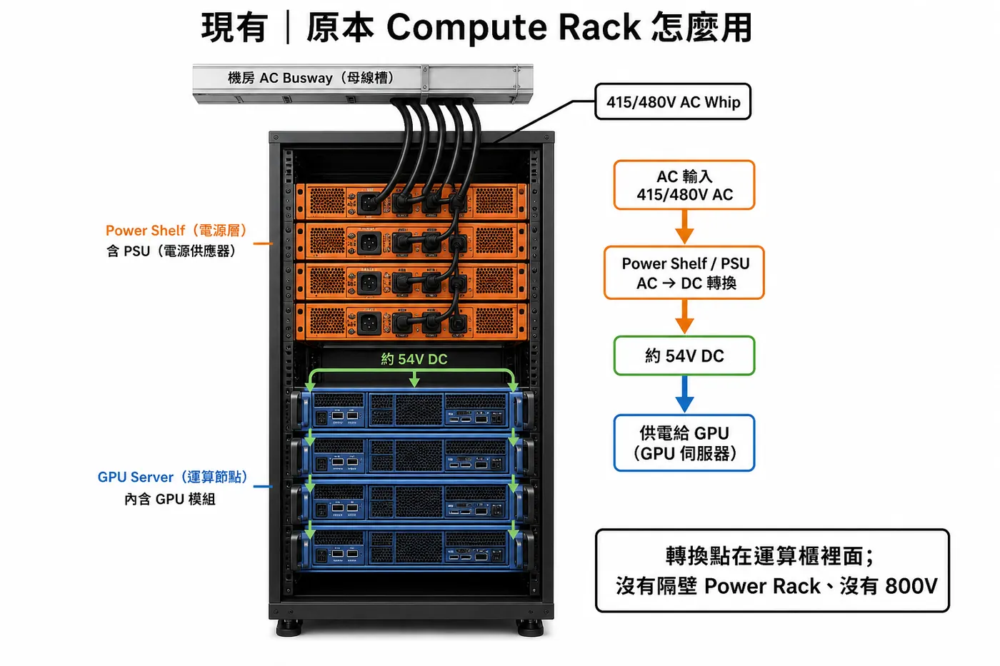
示意／非實拍：轉換點在運算櫃裡面；圖上 Power Shelf／PSU 對應上一節。
瓦數再往上衝時，櫃內電源架與粗線把空間吃光——這就是開頭那個瓶頸落到「單櫃長相」上的樣子。
BBU（Battery Backup Unit，電池備援單元）
＝插在同一層 Shelf 裡的電池磚。平常充電；斷電時短時間放電頂住母線（約 60 秒量級）。現有運算櫃空間少、較少配；新解方常跟 PSU 一起塞在 Power Rack 的 Shelf 裡（見方案 A）。
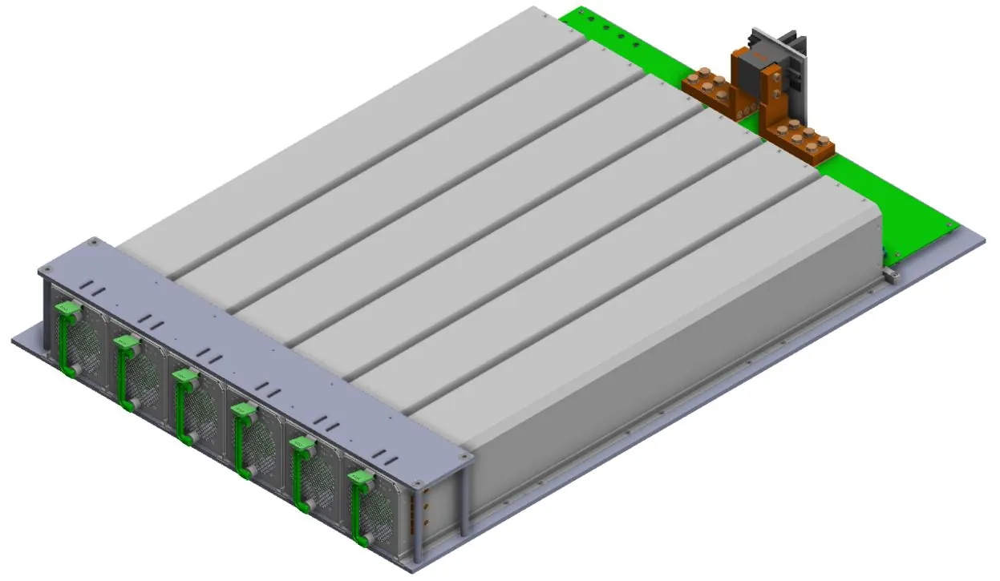
公開實拍（ADI OCP ORV3 BBU Reference Design）：電池磚＋背板。ORV3 約 48V／3kW 參考規格；800V／20～25kW 是同概念、更高規格（業界參考約數，非白皮書直接標）。
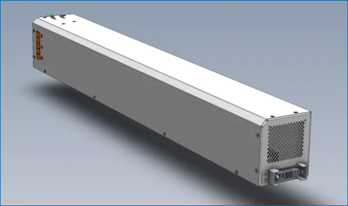
同上：單顆特寫。
示意／非實拍：功能拆解。
圖上各段（中英）：電池芯／模組 Battery cell／module → BMS（Battery Management System，電池管理） → 充放電 Charge／Discharge。

示意／非實拍：左平常＝AC→PSU→母線；右斷電＝BBU→母線（不經 PSU）。
細拆：傳統 vs 新，再拆 A／B／C
路徑對照：舊做法＝AC 一路進運算櫃才轉約 54V；新做法＝中間插一條 800V DC 高速公路，再降到約 54V（或 Kyber 可直降約 12V）。A／B／C 地圖見前面總覽，這裡往下拆。
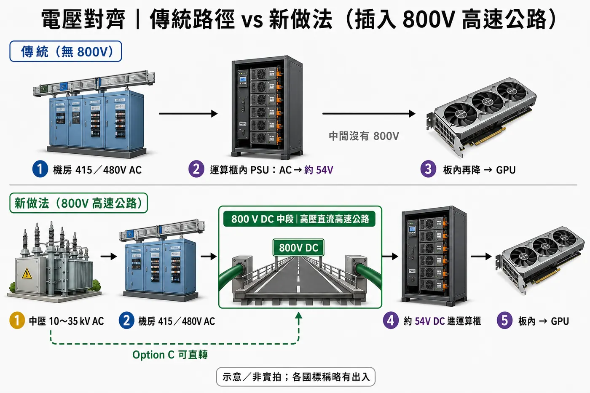
示意／非實拍：上＝傳統（AC 直進櫃轉 54V）；下＝新做法插入 800V 中段；虛線＝Option C 可從中壓直轉。
方案 A｜功率與層數

示意／非實拍：一個 Shelf → 疊幾層 → 660／540。櫃間 800V 用多條 125A Whip 並聯（540kW@800V≈675A），不是一條就夠。

示意／非實拍：左 Power Rack、右運算櫃；中間 800V Whip（單條約 125A，實務多條並聯才餵得滿）。
過渡 vs Kyber：上面「800→約 54V」是近端／過渡常見畫法。Kyber 原生可在節點用 64:1 LLC 直降約 12V，不一定再經 54V 中段。
方案 B｜叢集級 Power Center
先一句搞懂：方案 A＝每台運算櫃旁邊一台小電源櫃（1 餵 1）。方案 B＝改成遠處一台大電源中心，用頭上 800V 母線一次餵一整排運算櫃（1 餵多）。
為什麼要 B？ A 在叢集變大時，旁邊電源櫃太多、Whip 太亂。B 把轉換集中（叢集量級約 〜2 MW），佈線較乾淨；但分支故障怎麼切變難（後面接觸器／MCCB／SSCB）。時程約 2027Q3 試點起，偏中長期。
進電幾 V？ 跟 A 同一檔：415／480V AC 進 Power Center → 轉 800V DC 往外。不是中壓（那是 C）。

圖1｜示意／非實拍：上頭銀槽＝AC 進；綠扁母線＝800V 往右出算力區；左開櫃＝電源模組排。

圖2｜示意／非實拍：綠扁母線在頭頂 → 插接箱 → 垂進各運算櫃；櫃內分電源層與運算層。
分支故障怎麼切？ B 用一條 800V 母線餵多櫃，某一支短路不能整排一起掛。切斷裝在 Tap-off Box（掛在母線上的分接盒）裡。

現實｜廠商產品圖（Starline Track Busway 插接箱／Tap-off）：掛在軌道母線上；可含斷路器、插座或垂線。非現場照；型式示意 Option B 的分接盒角色（電壓／額定依專案）。
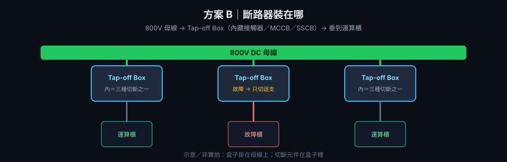
示意／非實拍：綠＝800V 母線；Tap-off＝分支盒；裡面裝接觸器／MCCB／SSCB 其中一種。
三種切斷方案：繼電器／接觸器｜MCCB｜SSCB。差在中間怎麼斷——

示意／非某廠指定型號：接觸器／MCCB 外型＝公開實拍；SSCB＝結構示意（不虛構產品面板）。半導體開關以 Si／SiC 為主（800V 場景 GaN 少見）。
為什麼 DC 特別難切？ AC 有自然過零點較好滅弧；高壓 DC 沒有 → 機械接點更痛，才把規格／SSCB 抬起來。
方案 C｜資料中心級（中壓直轉 800V）
一句：B＝先進機房降到 415／480V 再轉 800V；C＝中壓（約 13.8～35 kV，常寫 34.5／35）進 Power Block，一次轉成 800V，整廳都走 800V（拿掉中間那層低壓 AC）。
「不做降壓」？半對。不做的是「先降到 415／480V」那一層；Power Block 裡面仍要把中壓降到 800V，只是跟隔離／整流／穩壓一次做完。
為什麼要 C？B 改得少、部署快；機房拉到數百 MW～GW 時，多一層轉換的損耗會放大 → C 路徑更短，偏長遠。
電怎麼走：中壓 → Power Block（約 4.8 MW／座）→ 800V 整廳 → 櫃內仍 800V→約 54V→GPU（跟 A／B 一樣）。跟 B 差在：進電（中壓 vs 415／480V）、設備（Power Block vs Power Center）、覆蓋（整廳 vs 一排）。Power Block 裡近端 TRU、長線 SST——下面一張圖看完。
TRU、SST 是什麼？ 都是 Power Block 把 中壓 AC → 800V DC 的做法，差在「裡面用什麼做那四件事」。
TRU＝Transformer Rectifier Unit，變壓整流單元。字面就是變壓器＋整流器綁成一套。用傳統 50／60Hz 大變壓器把中壓降下來並隔離，再用整流器把交流變成直流。工業界用很久（電解、軌道、礦場的大功率直流電源）。優點：成熟、可靠、好部署 → 近端較可能做成 Power Block。代價是又大又重。
SST＝Solid-State Transformer，固態變壓器。「固態」＝用半導體開關，不是那顆大鐵心。用 SiC 功率模組＋高頻小變壓器，用電子方式做降壓、隔離、整流、穩壓。優點：體積小、功率密度高、長期整合強 → 長線較有潛力。還在量產驗證；台達 SST 量產線約 2027Q1 量級（產業消息，非白皮書），不是近端 Rubin 故事。
記一句：同一個職位（中壓直轉 800V），TRU＝舊配方（大鐵心＋整流），SST＝新配方（一堆高頻功率模組）。

示意／非實拍（整合版）：上＝中壓→Power Block→整廳 800V→運算櫃；中＝TRU（舊配方）vs SST（新配方）；底＝都做降壓＋隔離＋整流＋穩壓。
Power Block 裡面：不是超大 PSU、也不是把 Power Rack 放大。一座轉換廠，把降壓、隔離、整流、穩壓一次做完；外面一排灰櫃，裡面就是 TRU 或 SST。
不要跟 Power Rack 混：Power Rack 吃 415／480V、裡是 PSU 磚；Power Block 吃中壓，一定有能碰中壓的東西。
近端 TRU（變壓整流單元）——熟、重、好部署：
• 中壓開關／保護（先進來要能切斷）
• 工頻大變壓器（50／60Hz）＝降壓＋隔離。長相就是前面降壓變壓器那種三柱澆注線圈，只是 MW 級、更大
• 整流模組（二極體／閘流體）＝交流變直流
• 濾波電容／電感＋穩壓控制＝把 800V 撫平、釘住
長線 SST：同一四件事，改很多層 SiC 功率模組串起來扛中壓；每層＝SiC 開關＋高頻小變壓器＋整流，輸出並聯成 800V。體積小、密度高。
公開實拍（Wikimedia Commons）：工頻澆注變壓器。TRU 裡「降壓＋隔離」就是這種三柱線圈；Power Block 用的是 MW 級、更大。不是 800V 的 PSU 磚。
收束只記一句：舊機房 AC 進櫃才轉約 54V；新做法提早轉 800V 再降到約 54V。B 會卡在 DC 切斷／滅弧（MCCB／SSCB）。
哪些公司有機會（近→遠）
分檔＝跟本篇機制多貼（不是報酬）。只列原文有掛、關聯夠硬的；不夠純的不硬塞。

示意／非投資建議。